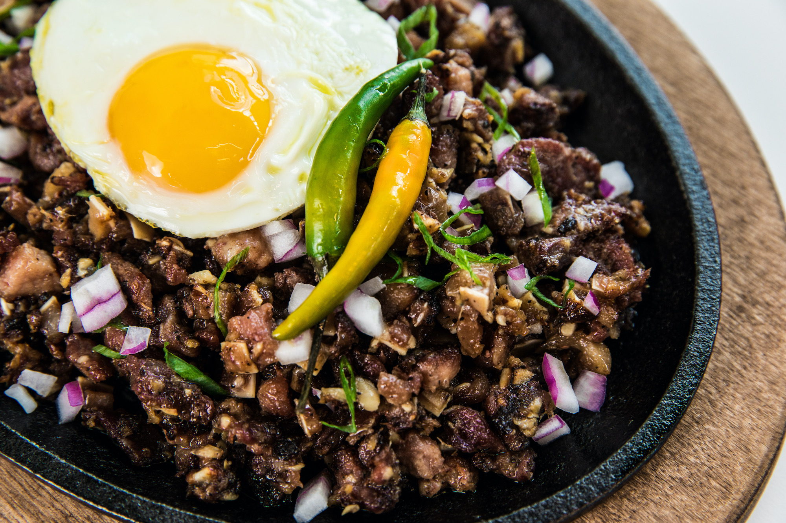
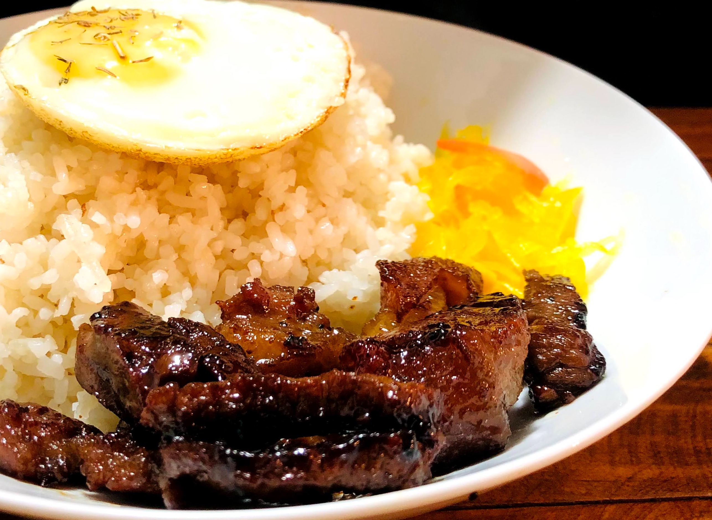
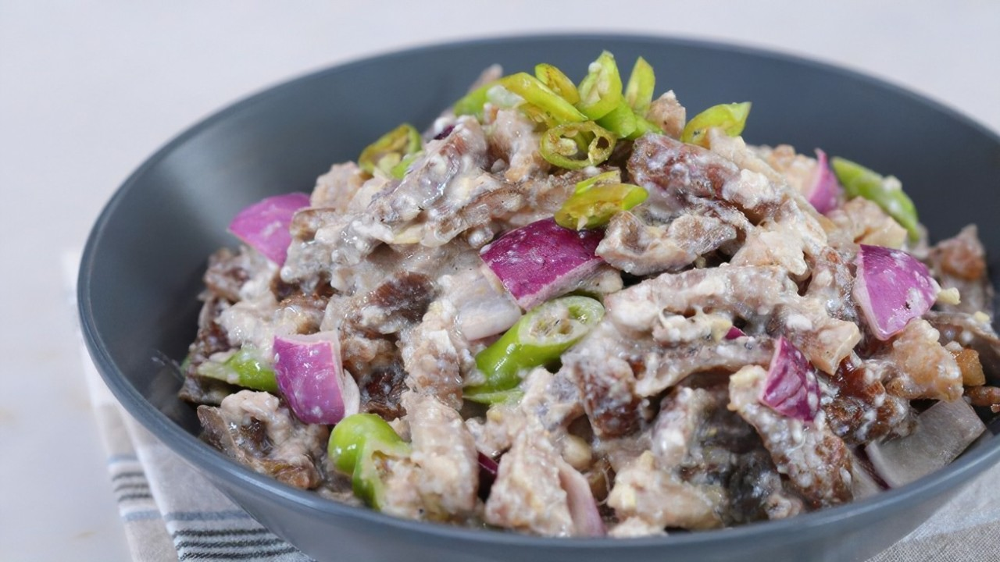

“We welcome your appetite. Let our food satisfy your stomach.”
EST.2023
Thank you for trusting us and referring us. Your every purchase make us bigger and stronger. Thanks for loving our product and being our loyal customer. Our family size is increasing with your every purchase. Keep your trust in us and we will deliver the best to you always. Thanks for all support and love.<3 -TEAM
FEATURED DISHES
Made from pork jowl and ears (maskara), pork belly, and chicken liver which is usually seasoned with calamansi, onions, and chili peppers that's been fried to perfection. Crispy, tangy, and meaty. It's a perfect complement for beer's natural earthy flavors.
Is a portmanteau of the dish's three components: They are served with various viands or ulam, usually meat dishes such as tapa, longganisa or ham (topings), sinangag (garlic fried rice), and itlog (fried egg).
Made with grilled pork parts tossed in a calamansi dressing with onions and chili peppers.
CHEF'S RECOMMENDATION
According to the head chef of our restaurant, he recommends that customers must try his mango "ice cream" graham at the end of your meal.